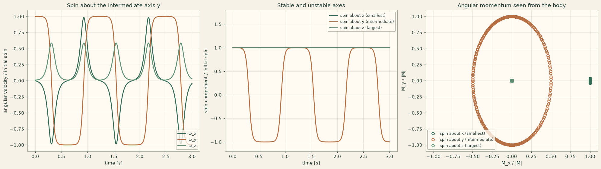
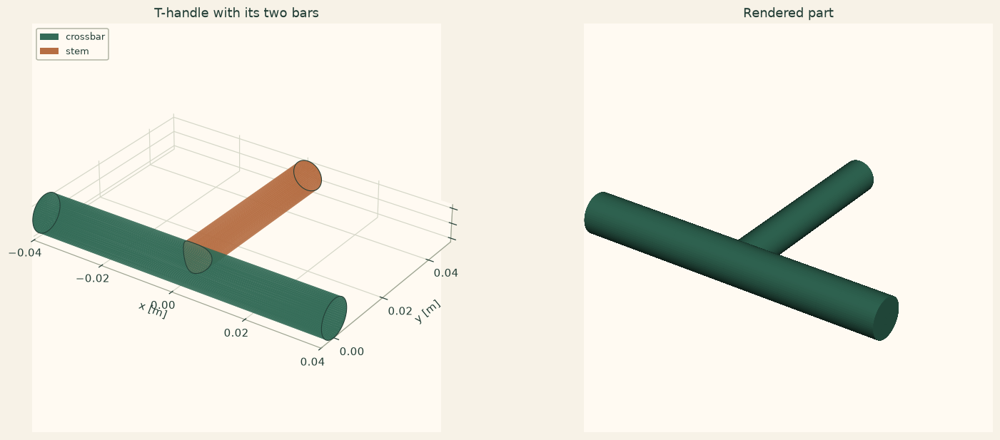

Docs › Examples › Dzhanibekov effect: the flipping T-handle
Rigid-body dynamics · 3D
Dzhanibekov effect: the flipping T-handle
A T-handle spinning in weightlessness turns over again and again when it spins about its intermediate principal axis.
Run locally with OneSimulation. The example downloads are free. Running them requires an activated runtime. The current pilot runs on macOS on Apple Silicon with CPython 3.13. Installation and activation · View pilot plans. Scope of the reference checks.

What it computes
OneSimulation reads the T-handle from the STEP file, takes the principal moments of inertia from the CAD solid and integrates Euler's equations of the torque-free rigid body for spins about all three principal axes. The script that builds the STEP file comes with the notebook.
What it checks
The spin about the intermediate axis flips 5 times in 3 s with a period of 1.23810 s, equal to the Jacobi elliptic-function period to better than 0.001 %; the two other spins stay stable, and energy and angular momentum drift by less than 1e-9.
Geometry
The notebook starts at the import of the CAD file dzhanibekov_t_handle.step: STEP (AP242), readable by any CAD program, with the names of the faces that the boundary conditions use. Put it next to the notebook.

The geometry script
The script dzhanibekov_t_handle_geometry.py builds the geometry with the CAD objects of OneSimulation and writes the file. Change a dimension there, run it, and run the notebook again.
"""Geometry of the OneSimulation example "Dzhanibekov effect: the flipping T-handle".
Builds a T-handle of aluminium bar with the CAD objects of OneSimulation: a crossbar 80 mm long
and 10 mm in diameter along x and a stem 50 mm long and 8 mm in diameter along y, standing on the
middle of the crossbar. Writes dzhanibekov_t_handle.step with the face groups crossbar and stem.
"""
from onesim.cad.d3 import Cylinder
crossbar = Cylinder(
radius=0.005, length=0.080, origin=(-0.040, 0.0, 0.0), axis=(1.0, 0.0, 0.0)
)
stem = Cylinder(
radius=0.004, length=0.050, origin=(0.0, 0.0, 0.0), axis=(0.0, 1.0, 0.0)
)
handle = crossbar | stem
handle = handle.grouped(
crossbar=handle.select(faces=lambda face: face.center[1] < 0.004),
stem=handle.select(faces=lambda face: face.center[1] >= 0.004),
)
handle.save("dzhanibekov_t_handle.step")The notebook
The complete notebook, cell by cell. Run it to produce the figures and the comparison printout.
In 1985 the cosmonaut Vladimir Dzhanibekov noticed that a wing nut spinning off its bolt in weightlessness turns over every few seconds, keeps spinning and turns back. The effect is the intermediate axis theorem: a rigid body with principal moments of inertia \(I_1<I_2<I_3\) spins stably about the axes of the smallest and the largest moment, but not about the intermediate one. Without torques the angular velocity \(\boldsymbol\omega\) in the body frame obeys Euler's equations
which conserve the kinetic energy \(E=\tfrac12\sum I_i\omega_i^2\) and the magnitude of the angular momentum \(M=|\,(I_1\omega_1,I_2\omega_2,I_3\omega_3)\,|\).
The body is a T-handle of aluminium bar from the CAD file dzhanibekov_t_handle.step, written by dzhanibekov_t_handle_geometry.py with the CAD objects of OneSimulation. Its principal axes are the coordinate axes: \(x\) along the crossbar (smallest moment), \(y\) along the stem (intermediate) and \(z\) normal to the plane of the T (largest).
Reference. L. D. Landau and E. M. Lifshitz, Mechanics, 3rd ed., Pergamon (1976), §37: for \(M^2>2EI_2\) the components are Jacobi elliptic functions of \(\tau=t\sqrt{(I_3-I_2)(M^2-2EI_1)/(I_1I_2I_3)}\) with the modulus \(k^2=(I_2-I_1)(2EI_3-M^2)/\big((I_3-I_2)(M^2-2EI_1)\big)\); \(\omega_2\propto\operatorname{sn}\tau\) changes sign twice in the period
import numpy as np
from onesim.cad.exchange import load
from onesim.cad.geometry import LumpedDomain
from onesim.meshing import LumpedMesh
from onesim.numerics import Numerics
from onesim.numerics.discretization import LumpedParameters
from onesim.numerics.time import ClassicalRungeKutta4
from onesim.physics.multibody import EulerTop
from onesim.results.sampling import crossing_times
from onesim.simulation import Problem, Simulation
from onesim.simulation.initial_conditions import InitialValue
from onesim.visualization import plots, theme
from scipy.special import ellipk
theme.set()Geometry and inertia
load returns the solid; its inertia is the inertia tensor about the centre of mass per unit density. Multiplied by the density of aluminium it gives the principal moments.
handle = load("dzhanibekov_t_handle.step")
density = 2700.0
inertia = tuple(np.diag(handle.inertia) * density)
print(
f"mass {1e3 * density * handle.volumes[0].measure:.1f} g, centre of mass ({', '.join(f'{1e3 * c:.2f}' for c in handle.center_of_mass)}) mm"
)
print(
"principal moments of inertia [kg mm²]: "
+ ", ".join(f"I_{axis} = {1e6 * value:.3f}" for axis, value in zip("xyz", inertia))
)
view = plots.Camera(elevation=30, azimuth=-55)
fig = plots.figure(1, 2, size=(14, 5.5))
plots.geometry(
handle,
selection={"crossbar": handle.boundaries.crossbar, "stem": handle.boundaries.stem},
labels=False,
camera=view,
title="T-handle with its two bars",
ax=fig[0],
)
plots.render(handle, camera=view, title="Rendered part", ax=fig[1])
plots.show()Model
EulerTop holds Euler's equations for the three body-frame components of the angular velocity. The handle is spun at 5 revolutions per second about each principal axis in turn, with a small disturbance of 1 % of the spin on the component about the axis of the largest moment (about the smallest axis for the spin about \(z\)). Classical Runge-Kutta with a step of 1 ms integrates 3 s.
spin, disturbance = 2 * np.pi * 5.0, 0.01
domain = LumpedDomain()
top = EulerTop(domain=domain.system, inertia=inertia, torque=(0.0, 0.0, 0.0))
starts = {
"x (smallest)": (spin, 0.0, disturbance * spin),
"y (intermediate)": (0.0, spin, disturbance * spin),
"z (largest)": (disturbance * spin, 0.0, spin),
}
numerics = Numerics(spatial=LumpedParameters(), time_integrator=ClassicalRungeKutta4())
runs = {
axis: Simulation(
problem=Problem(
name=f"Spin about {axis}",
geometry=domain,
physics=(top,),
initial_conditions=tuple(
InitialValue(top.angular_velocity(c), w) for c, w in zip("xyz", omega)
),
),
mesh=LumpedMesh(domain),
numerics=numerics,
).run(start_time=0.0, end_time=3.0, time_step=1e-3)
for axis, omega in starts.items()
}Results
Energy and angular momentum over the whole run, the largest excursion of the two disturbed components, and the flip period of the intermediate-axis spin from the sign changes of \(\omega_y\) against the elliptic-function period.
omega = {
axis: np.array([run.field(top.angular_velocity(c)).time_series()[1] for c in "xyz"])
for axis, run in runs.items()
}
times = runs["y (intermediate)"].field(top.angular_velocity("y")).time_series()[0]
energy, momentum = (
0.5 * np.dot(inertia, np.square(starts["y (intermediate)"])),
np.linalg.norm(np.multiply(inertia, starts["y (intermediate)"])),
)
i1, i2, i3 = inertia
landau = (
4
* ellipk(
(i2 - i1)
* (2 * energy * i3 - momentum**2)
/ ((i3 - i2) * (momentum**2 - 2 * energy * i1))
)
* np.sqrt(i1 * i2 * i3 / ((i3 - i2) * (momentum**2 - 2 * energy * i1)))
)
flips = crossing_times(times, omega["y (intermediate)"][1], 0.0, direction="both")
for axis, run in runs.items():
e, m = (
run.field(top.energy).time_series()[1],
run.field(top.momentum_norm).time_series()[1],
)
k = "xyz".index(axis[0])
print(
f"spin about {axis:17s} relative drift: energy {np.ptp(e) / e[0]:.1e}, angular momentum {np.ptp(m) / m[0]:.1e}; "
f"spin component from {omega[axis][k].min() / spin:+.3f} to {omega[axis][k].max() / spin:+.3f} of the initial spin"
)
print(
f"intermediate axis: {len(flips)} flips in 3 s, flip period {2 * np.diff(flips).mean():.5f} s, "
f"elliptic-function period {landau:.5f} s, deviation {100 * (2 * np.diff(flips).mean() / landau - 1):+.3f} %"
)Figure
The three components of the angular velocity for the spin about the intermediate axis, the spin component for all three axes, and the path of the angular-momentum direction in the body frame: it circles the stable axes and swings from pole to pole around the intermediate one.
fig = plots.figure(1, 3, size=(18, 5))
plots.line(
times,
{f"ω_{c}": omega["y (intermediate)"][k] / spin for k, c in enumerate("xyz")},
xlabel="time [s]",
ylabel="angular velocity / initial spin",
title="Spin about the intermediate axis y",
legend="lower right",
ax=fig[0],
)
plots.line(
times,
{f"spin about {axis}": omega[axis]["xyz".index(axis[0])] / spin for axis in runs},
ylimits=(-1.2, 1.8),
xlabel="time [s]",
ylabel="spin component / initial spin",
title="Stable and unstable axes",
legend="upper right",
ax=fig[1],
)
plots.line(
points={
f"spin about {axis}": (
np.multiply(inertia, omega[axis].T)[::5, 0]
/ np.linalg.norm(np.multiply(inertia, starts[axis])),
np.multiply(inertia, omega[axis].T)[::5, 1]
/ np.linalg.norm(np.multiply(inertia, starts[axis])),
)
for axis in runs
},
xlimits=(-1.1, 1.1),
ylimits=(-1.1, 1.1),
xlabel="M_x / |M|",
ylabel="M_y / |M|",
title="Angular momentum seen from the body",
legend="lower left",
ax=fig[2],
)
plots.show()Going further
Change the stem in dzhanibekov_t_handle_geometry.py until its moment about \(y\) is no longer intermediate, write the STEP file again and watch the flips disappear; or make the disturbance smaller: the flip period grows only with its logarithm.